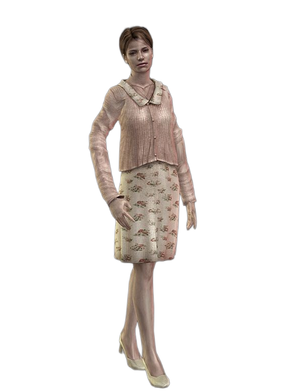

James Sunderland

James es un hombre destrozado por el dolor y la culpa. Tras recibir una carta de su esposa Mary, quien murió tres años antes, se adentra en el pueblo de Silent Hill en busca de respuestas. A lo largo de su travesía, James enfrenta las manifestaciones físicas de su tormento psicológico.
Maria
Maria es una mujer que James encuentra en Silent Hill. Se parece a su esposa fallecida, Mary, pero su comportamiento es más provocativo y manipulador. Maria es una representación de los deseos reprimidos de James.
Angela Orosco
Angela es una mujer joven que llega a Silent Hill en busca de su madre. Su historia está marcada por los abusos que sufrió a manos de su familia.
Eddie Dombrowski
Eddie es un hombre con problemas de autoestima y un historial de abusos. En Silent Hill, muestra signos de inestabilidad mental.
Laura
Laura es una niña que también aparece en Silent Hill, en busca de alguien especial para ella. Representa la inocencia y una conexión diferente con James, mostrándose ajena a las oscuras manifestaciones del pueblo.
Mary Sunderland
Mary es la esposa fallecida de James. Su muerte es el detonante de los eventos de Silent Hill 2. Aunque no aparece mucho físicamente, su influencia y recuerdos son fundamentales para la historia y los tormentos de James.